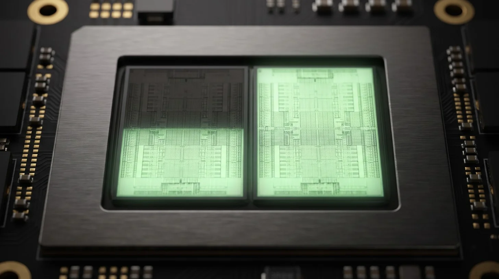
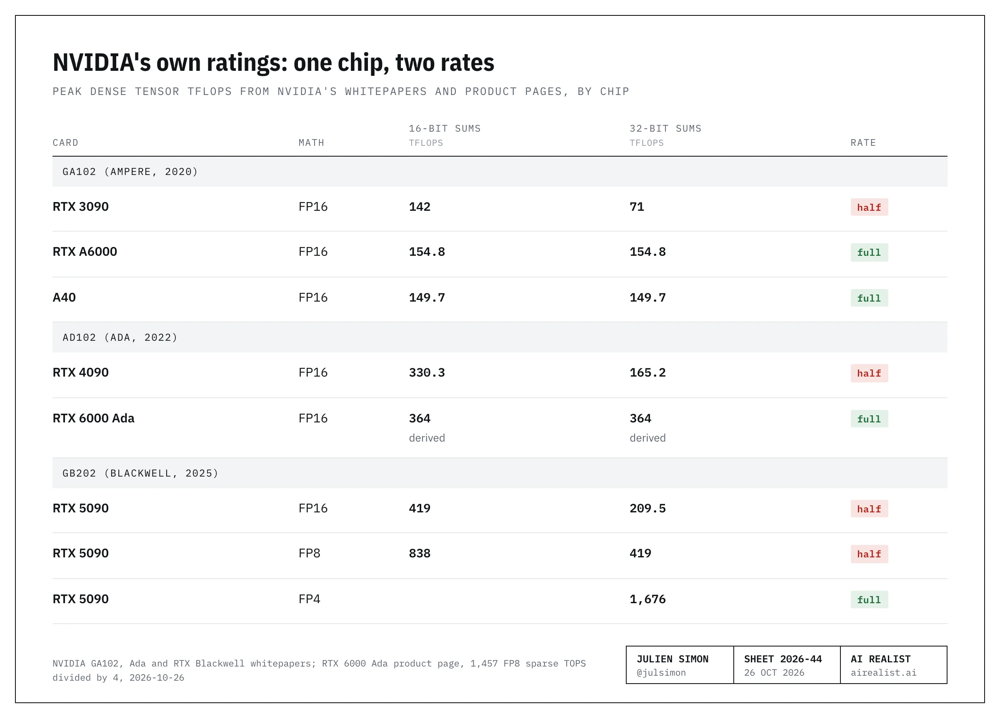
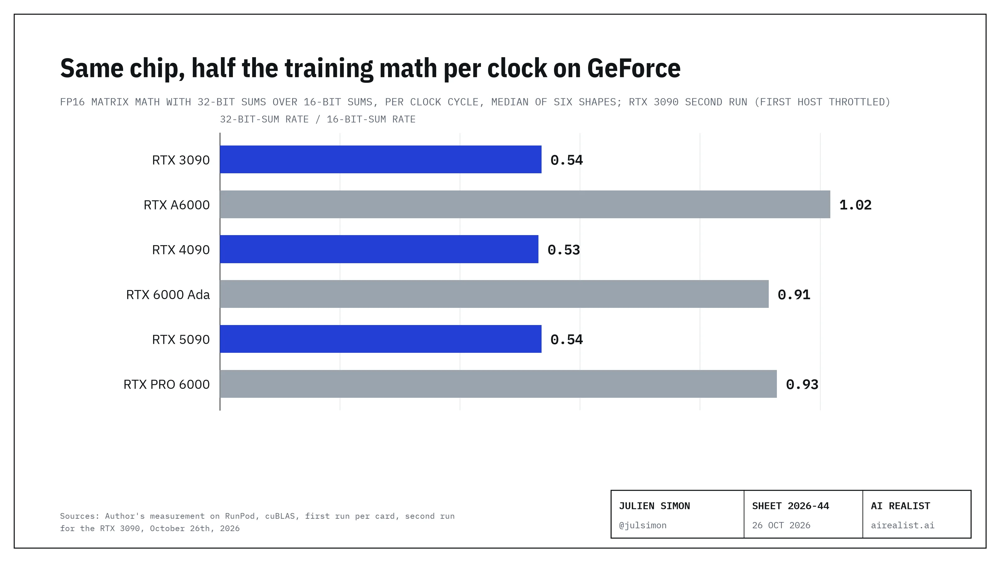

On October 25th, 2026, two open-source Linux modules for GeForce cards reached the hardware sites under headlines like TechPowerUp's "GeForce Unlocked: Modders Boost RTX 20, RTX 30, and RTX 40 Compute Performance by Up to 2x".[1] According to their authors, each module loads before NVIDIA's driver, changes a setting on the card and hands it back to the driver, and an RTX 4090 then issues 16-bit matrix math with 32-bit sums, the kind mixed-precision training relies on, at about twice the rate.[2]
Twice compared to what? NVIDIA has printed the answer for years. Its own whitepapers rate GeForce cards at half speed for the math training uses, and its Ampere whitepaper rates the professional cards on the same chip at full speed. The modules show that the gap is a setting, not the silicon: an owner measured 1.9 times as much of that math per clock cycle on an RTX 3090 once the module had run. Counting per cycle takes the card's changing clock speed out of the comparison.[3] NVIDIA sells one chip at two rates. Even at the lower rate, GeForce is the cheapest matrix math to buy, and unlocked it wins by more.
Two numbers for one GeForce chip
A tensor core multiplies small blocks of numbers and adds up the products. It can keep that running sum in 16-bit precision, which some inference code can tolerate, or in 32-bit precision, which is what mixed-precision training uses because long sums in 16 bits drift. I'll call the gap between the two speeds on GeForce the half rate, because that is what it is.
NVIDIA's own documents give the game away. On each of the last three chips, the whitepaper rates the GeForce card at half speed with 32-bit sums. The Ampere whitepaper rates the professional cards built on the same silicon at full speed, and the RTX 6000 Ada's product page implies the same on Ada.[4][5][6]

A fast.ai forum user spotted it in December 2018: "the Geforce RTX cards (not the Titan RTX) have half-speed FP32 accumulate, when running in FP16 mode".[7] When NVIDIA launched the RTX 3090 in September 2020, it set the card against that Titan RTX, the one with the full rate. By NVIDIA's own ratings, the new card had about half the old one's training math.[8]
Spec sheets are promises, so I measured. On October 26th, 2026, I rented one GeForce card and one professional card for each of the last three chip generations and ran the same matrix multiplications in both modes.[9] The chart says it in one line: per clock cycle, every GeForce card does about half as much math with 32-bit sums as with 16-bit sums, and every professional card does about the same in both. Four of the six cards ran twice, on different hosts, with the same result.

NVIDIA's own datacenter L40 is rated at half the FP16 tensor speed of the L40S, with no accumulate type stated.[10] In NVIDIA's whitepapers, product pages and developer forum, I found no explanation of the half rate.[11]
What the GeForce unlocks prove
They prove the half rate is a setting. Since October 22nd, owners have posted before-and-after results on the Ampere module's issue tracker, and the per-clock gain matches the gap between GeForce and the professional cards in my runs.[3] Speed at the power limit rises less, because the card stays under the same limit and drops its clock. Even so, an unlocked RTX 3090 lands where my A6000 did: the professional card's training math, on a used gaming card.[12]
![Table: what the open-source modules give in owners' tests, October 2026. Matrix math with 32-bit sums, RTX 3090 at each card's stock power limit: +56 to +80%, 69 to 78 TFLOPS before, 108 to 131 after (issues #52, #132, #146, #158). RTX 4090: +10 to +34% (issue #157, module README); ceiling from my stock runs +44 to +71%. LoRA fine-tuning step, four RTX 3090s at 240 W: +20% (#75). Reading a prompt (prefill), RTX 3090 at 240 to 375 W: +9 to +50%, including 4-bit weights in vLLM (#75, #107). Generating tokens, one stream: 0%, flat (#75). RTX 5090: the modules don't work on Blackwell (ai.rs). Failed runs: 7 of 95 reports on the Ampere tracker; #23 left cards unusable by the driver.](image-04.webp)
The 4090 gains less, because even its full-speed 16-bit-sum mode already runs into the 450 W wall, well short of the spec sheet. Plan on the 10 to 34% that owners and the module's author report, not 2x. And training and inference gain differently. Fine-tuning and reading a long prompt are the same dense math, so they gain, even with 4-bit weights in vLLM; llama.cpp's integer kernels for quantized weights gain little. Generating tokens one at a time waits on memory bandwidth, not on math, so it gains nothing.[12]
The limits are real too. Some runs fail, and one left the cards unusable by NVIDIA's driver.[3] As of October 25th, the RTX 5090 is out of reach: the entry point the modules use doesn't exist on Blackwell.[13] Blackwell also moved the cap. The 5090 is halved for 16-bit and 8-bit math with 32-bit sums, but NVIDIA rates its 4-bit math at full speed, the format that squeezes the biggest models into 32 GB.[5]
What the half rate costs a GeForce buyer
A spec sheet gives a peak. What you pay for is the matrix math a card delivers, so I divided each price by what the cards delivered in my runs with 32-bit sums. These are matrix multiplications, not whole jobs, so the ranking assumes your job keeps every card equally busy.[14]
Pricing by delivered speed reorders the cards, and the reason is power. NVIDIA rates the RTX 6000 Ada, the professional card built on the 4090's chip, for 300 W, against 450 W for the 4090, and the chart below shows the cost: at its limit, the professional card delivers about a third of its rating. It isn't heat. The card stays cool, holds a 300 W limit that NVIDIA lets no one raise, and runs at well under half the clock its rating assumes; per clock cycle, it does nearly all of its rated work.[6] On paper, the RTX 6000 Ada has more than twice the 4090's training math. On the bench, the half-rate 4090 delivers more. Bizon's ResNet-50 runs are closer than my matrix multiplications but point the same way: the professional card edges ahead with 16-bit math and falls clearly behind with full 32-bit math.[6] The previous generation is different: on Ampere, the A6000 out-delivers the 3090, so there the full rate shows up.
![Chart: FP16 matrix math, TFLOPS, NVIDIA's dense rating against delivered at each card's power limit, measured on October 26th, 2026, six shapes, two hosts each. RTX 4090 with 16-bit sums: rated 330, delivered 220 to 267 at 450 W, 67% to 81%. RTX 4090 with 32-bit sums: rated 165, delivered 145 to 163 at 450 W, 88% to 99%. RTX 6000 Ada with 16-bit sums: rated 364, delivered 118 to 145 at 300 W, 33% to 40%. RTX 6000 Ada with 32-bit sums: rated 364, delivered 93 to 127 at 300 W, 26% to 35%. RTX 6000 Ada at 300 W: 39 to 65 °C, no thermal slowdown, about 1 GHz against a rated 2.5 GHz.](image-05.webp)
Now the prices, from trackers between October 11th and 26th, 2026, in the table below. The cheapest delivered math is a used GeForce card, and a new RTX 6000 Ada costs more than four times as much per TFLOP at either end of the two price ranges. The new RTX 5090 lands in between only because it sells far above its $1,999 launch price.[15] The professional cards I priced add memory, 48 GB against 24 or 32, and ECC. They don't add matrix math per dollar. I priced no used professional card.
Unlocked, the cheap cards get cheaper. By owners' figures, not my runs, a used 3090 becomes the cheapest math in the table, and the gap to a new A6000, the professional card on the same chip, turns into a multiple.[12]
Renting is closer. The unit is dollars per petaflop-hour: what 1,000 TFLOPS of delivered matrix math costs for one hour. On RunPod's secure cloud, the 4090 still rents cheaper per unit of math than the RTX 6000 Ada, and on Bizon's ResNet-50 numbers it is still cheaper per image. The previous generation flips: the A6000 costs more per hour than the 3090 and less per unit of math, because it delivers so much more.[16] RunPod's cards stay capped: a RunPod pod is a container, and it can't load the modules.[9]
![Table: price per TFLOP of matrix math delivered, October 2026, FP16 with 32-bit sums. RTX 4090 used, $2,271 to $3,000, delivers 145 to 163 TFLOPS, $14 to $21 per TFLOP, rents for $5.50 to $6.10 per petaflop-hour, unlocked $10 to $19 per TFLOP by owners' and the module author's figures. RTX 5090 new, $4,921 to $7,444, 206 to 221 TFLOPS, $22 to $36, $5.40 to $5.80, no module available. RTX 6000 Ada new, $7,499 to $9,069, 93 to 127 TFLOPS, $59 to $97, $7.80 to $10.60. Previous generation: RTX 3090 used, $1,093 to $1,400, 58 to 74 TFLOPS, $15 to $24, $6.70 to $8.70, unlocked $8 to $13, the cheapest. RTX A6000 new, $5,990, 105 to 121 TFLOPS, $50 to $57, $4.90 to $5.60.](image-06.webp)
Price the GPU you are actually buying
In April, I argued thatNVIDIA's consumer lineroutes serious users toward its highest-margin parts in three layers: memory capped at 32 GB, NVLink gone, a desktop AI box short on bandwidth.[17] The half rate is a fourth layer, and the weakest: on Ada, a 300 W power limit takes back most of what the full rate promises, and on Ampere and Ada a kernel module switches it off.
Twice compared to what? The same chip with a setting switched off. And twice the math doesn't mean twice the training or twice the inference: an owner's fine-tuning step ran 20% faster, and generating tokens gained nothing.[12]
So price every card at what it delivers, not at what the spec sheet promises. If your model fits in 24 or 32 GB, buy GeForce. If your model doesn't fit, pay for 48 GB and ECC, not for speed.
NVIDIA draws its own line in the GeForce driver license, section 2.8: the software "is not licensed for datacenter deployment".[18] The fence that holds is memory, and no module climbs that one.
Notes
[1] Hardware Busters,"RTX 4090 Tensor Unlock Doubles FP16 Throughput on Linux, and Ampere Cards Gain Up to 80%", October 25th, 2026, accessed October 26th, 2026; TechPowerUp,"GeForce Unlocked: Modders Boost RTX 20, RTX 30, and RTX 40 Compute Performance by Up to 2x", accessed October 26th, 2026 (no date on the saved page). Both saved insources/.
[2] JustAResearcher,gpu-unlock-ada, README accessed October 26th, 2026: a Linux kernel module that loads before the NVIDIA driver, runs NVIDIA's signed boot firmware with a payload that writes "SM speed-select" register values, resets the card and lets the stock driver bind. RTX 4090, FP16 with FP32 accumulate: 165.6 to 331.6 TF/s, an issue rate, not an application speedup. The same README reports an independent owner run on an RTX 4090 in which cuBLAS FP16 gained 12 to 34% and BF16 16 to 20%. The Ampere module is Zagitta,gpu-unlock. ItsREADME, accessed October 28th, 2026, after a "Release 2.0" commit on October 27th: Ada Lovelace and Turing cards "Experimental", Blackwell "Not supported". The mechanism is the authors' description; the result has been reproduced by owners (note [3]).
[3] Zagitta,gpu-unlock issue tracker, read October 26th, 2026: repository created October 18th, 2026; 134 issues, 95 of them titled as compatibility or success reports, posted from October 22nd to October 26th by different users (issue dumps saved insources/repro/). Per-clock result: chflame163,issue #33, October 24th, 2026, stock EVGA RTX 3090 at a 350 W cap: FP16 "70.8 @1680 MHz" before, "111.3 @1380 MHz" after, "0.042 -> 0.081 (x1.94)" TFLOPS per MHz. On the Ada module, JimmyToluene,issue #58, October 26th, 2026, RTX 4090 issue rate "FP16 / FP32 accumulate | 169.4 TF/s | 338.7 TF/s | 2.000×". The owner's figures give 70.8 ÷ 1680 and 111.3 ÷ 1380, about 1.9 times per clock. These are owners' reports, not a lab's; the per-clock doubling matches the stock ratio we measured (note [9]). Failures, counted from the saved dump: seven issues report a run that failed on a card (#11, #20, #23, #38, #67, #135, #171), three report install or build errors (#18, #45, #92);issue #23: "unlock fails with -ETIMEDOUT on non-cold cards and leaves GPUs unusable by nvidia".
[4] NVIDIA,NVIDIA Ampere GA102 GPU Architecture whitepaper, v2, accessed October 26th, 2026. Table 3, "NVIDIA RTX A6000 and NVIDIA A40 Specs": GPU codename GA102 for both; peak FP16 Tensor TFLOPS with FP16 accumulate 154.8 (A6000) and 149.7 (A40); with FP32 accumulate 154.8 and 149.7. Table 9, "Comparison of GeForce RTX 3090 to NVIDIA Titan RTX": RTX 3090 FE 142 with FP16 accumulate, 71 with FP32 accumulate (dense; sparse figures omitted). Second document, which repeats the whitepaper split rather than measuring it: kadirnar,kernel-agent issue #257, October 9th, 2026, which builds the split into a performance tool: "On GeForce Ampere and Ada, fp32-accumulating HMMA is half the fp16-accumulating rate", "RTX 3090 71 vs 142". The A6000's equal rates are checked by our measurement in note [9].
[5] NVIDIA,NVIDIA Ada GPU Architecture whitepaper, Appendix A, "GeForce RTX 4090 GPU Full Specifications": peak FP16 Tensor TFLOPS with FP16 accumulate 330.3, with FP32 accumulate 165.2; the same table rates the RTX 2080 Ti at 113.8 and 56.9 and the RTX 3090 Ti at 160 and 80. NVIDIA,NVIDIA RTX Blackwell GPU Architecture whitepaper, Appendix A: RTX 5090 419 with FP16 accumulate, 209.5 with FP32 accumulate; BF16 with FP32 accumulate 209.5. The same table, RTX 5090, dense: "Peak FP8 Tensor TFLOPS with FP16 Accumulate" 838, "with FP32 Accumulate" 419; "Peak FP4 Tensor TFLOPS with FP32 Accumulate (FP4 AI TOPS)" 1676 (3352 with sparsity). Author's calculation: 1676 ÷ 838 = 2. The FP4 rate, rated with 32-bit sums, is double the FP8 rate with 16-bit sums, so 4-bit math is not halved. The whitepaper says FP4; it does not name NVFP4. Both accessed October 26th, 2026; dense figures. Second document: our measurement in note [9].
[6] NVIDIA,RTX 6000 Ada Generation product page, accessed October 26th, 2026: "Max Power Consumption 300 W"; "Tensor Performance 1457 AI TOPS", footnoted as FP8 with sparsity, which is 364 TFLOPS of FP16 without sparsity, the full-rate peak. NVIDIA'sAda whitepaper(note [5]), Appendix A, gives the RTX 4090 a "TGP (Total Graphics Power)" of 450 W. Under load (utilization at least 90%), our RTX 6000 Ada drew 291 to 306 W at a median clock of 960 to 975 MHz, 765 to 1,395 MHz from the 5th to the 95th percentile, on both hosts (note [9]). Telemetry fromnvidia-smion both hosts, saved ingeforce-half-rateunderresults/: GPU temperature 39 to 65 °C in samples above 200 W, "HW Thermal Slowdown" and "SW Thermal Slowdown" 0 µs, power limit current, default and maximum all 300 W; the clock reached 2,805 MHz in short bursts. NVIDIA'sRTX 6000 Ada datasheet, accessed October 26th, 2026: "18,176 CUDA® cores", FP32 "91.1 TFLOPS", "Peak rates based on GPU Boost Clock", "Total board power: 300 W". Author's calculation, boost clock in MHz, with FP32 in millions of operations per second and two per core per cycle: 91,100,000 ÷ (18,176 × 2) ≈ 2,506. Rated tensor work per clock: 364.25 ÷ 2,506 ≈ 0.145 TFLOPS per MHz. Measured, 16-bit sums: 145.1 TFLOPS at 1,125 MHz and 118.4 at 870 MHz, so 145.1 ÷ 1,125 ≈ 0.129 and 118.4 ÷ 870 ≈ 0.136, which is 0.129 ÷ 0.145 ≈ 89% and 0.136 ÷ 0.145 ≈ 94% of the rated work per clock. Independent benchmark: Bizon,RTX 4090 vs RTX 6000 Ada, accessed October 26th, 2026, "Resnet50 (FP16)", one GPU: RTX 4090 1720, RTX 6000 Ada 1800; "Resnet50 (FP32)": 927 and 709. Bizon labels the runs FP16 and FP32 and gives no date or software version. Author's calculation: 1800 ÷ 1720 ≈ 1.05; 709 ÷ 927 ≈ 0.76. At RunPod's secure prices (note [16]) the RTX 6000 Ada rents for 11% more than the 4090, so it is the cheaper rental only if it does at least 11% more real work. Author's calculation: 0.99 ÷ 0.89 ≈ 1.11.
[7] crayoneater,"Geforce RTX = half speed FP32 accumulate (in mixed prec. mode)", fast.ai forums, December 20th, 2018: "Just learned that the Geforce RTX cards (not the Titan RTX) have half-speed FP32 accumulate, when running in FP16 mode". December 24th, 2018, comparing published benchmarks, not their own runs: "The Titan V card is actually not crippled, so comparing FP16 vs FP32, at least in the context of Resnet50, shows that the RTX 20's lose roughly 15-20% performance on account of the half-speed MPT accumulate." The Titan RTX was unveiled on December 3rd, 2018 (Engadget).
[8] NVIDIA blog,"'Giant Step into the Future': NVIDIA CEO Unveils GeForce RTX 30 Series GPUs", September 1st, 2020, read from theWayback Machine copy: "Its Herculean 24GB of GDDR6X memory running at 19.5Gbps can tackle the most challenging AI algorithms"; "At 4K it's up to 50 percent faster than the TITAN RTX before it." Titan RTX ratings: GA102 whitepaper (note [4]), Table 9, 130.5 TFLOPS with FP16 accumulate and 130.5 with FP32 accumulate.
[9] Author's measurement, October 26th, 2026, on RunPod: cuBLAScublasGemmEx, FP16 inputs with FP16 or FP32 accumulation, six matrix shapes (three square, three from a Llama-3.1-8B prefill at 4,096 tokens), random data, median of three trials of about 2 seconds, clocks and power sampled every 0.5 seconds. Cards: RTX 3090 and RTX A6000 (GA102), RTX 4090 and RTX 6000 Ada (AD102), RTX 5090 and RTX PRO 6000 Blackwell Workstation Edition (GB202). Per clock means TFLOPS divided by the median SM clock during each run; I chose that normalization after seeing that the cards sat at their power limits, so it is not a pre-registered test. The RTX 4090, RTX A6000, RTX 6000 Ada and RTX 3090 ran a second time on other hosts the same day; the RTX 5090 and RTX PRO 6000 ran once. Second-run per-clock ratios: 4090 0.52 to 0.55, A6000 0.96 to 1.06, RTX 6000 Ada 0.88 to 1.04, RTX 3090 0.51 to 0.54. The first RTX 3090 host held the card to 270 to 290 W of its 350 W limit, so the low end of its range (57.7 TFLOPS) and the $24 and $8.70 ends in notes [15] and [16] carry that throttle; the second ran at 339 to 342 W. Owners' stock baselines for the RTX 3090 run 62.9 to 80.1 TFLOPS (note [12]). All pods were RunPod hosts (secure and community cloud mixed); prices in note [16] are secure cloud. The RTX PRO 6000 host set a 390 W power limit on a card NVIDIA rates for 600 W, so its absolute figures say nothing about the card; only its per-clock ratio is used. Scripts, raw results and the full write-up:geforce-half-rate, withFINDINGS.mdand one folder per run. The whitepapers in notes [4] and [5] are the documents this measurement checks. The repository's README: "A RunPod pod is a container, so this measures the half rate on stock cards; it cannot load the kernel modules that lift it."
[10] NVIDIA,Ada whitepaper(note [5]), Table 4, "NVIDIA L40 vs NVIDIA A40": L40 FP16 Tensor Core Performance 181 TFLOPS (362 with sparsity), no accumulate type stated. NVIDIA,L40S product page, accessed October 26th, 2026: "FP16 Tensor Core 362.05" (733 with sparsity), "48GB GDDR6 with ECC", 350 W; theL40 product pagegives 48 GB GDDR6 with ECC and 300 W.
[11] Searched on October 26th, 2026: the three whitepapers in notes [4] and [5], NVIDIA's GeForce RTX 3090 product page, and NVIDIA's developer forums, where athread of May 29th, 2024cites the half rate and gets a documentation answer ("The compute type must be CUBLAS_COMPUTE_32F"), not a reason. Also searched: the RTX 6000 Ada product page (note [6]) and the GeForce software license (note [18]). Not searched: cuBLAS and CUDA documentation, GTC talks.
[12] Owners' matrix-multiplication results, before and after, stock cards: RTX 3090 FP16 70.89 to 111.03 TFLOPS (#132), 74.75 to 130.36 (#146), 71.5 to 128.6 and 77.6 to 130.9 at the card's stock 420 W limit (#158), seven cards at +56 to 61% (#52), and a low of +38 to 40% (#114); RTX 4090 FP16 162.1 to 178.8 and BF16 160.2 to 188.1, with a fork of the Ada module (#157). Workloads: four RTX 3090s at 240 W, LoRA fine-tuning "10.80s / step" to "9.00s / step" at the same 240 W limit, 8.71 with a tuned clock profile, prefill "+9.3%", decode "0% gain (flat within noise)" (#75); vLLM prefill with 4-bit weights and 16-bit activations (W4A16) +25% at 250 W, +48% at 350 W and +50% at 375 W, "power limit swept 250–375 W" (#107); llama.cpp, whose quantized weights run through integer kernels: prefill "4810 tok/s" before and "4801 tok/s" after with 6-bit weights (#146), "2387 → 2457 (+3%)" at zero context and "1682 → 1844 (+10%)" at 32k with 4-bit weights (#158). Ceiling from our stock runs, RTX 4090, 16-bit-sum TFLOPS over 32-bit-sum TFLOPS for the same shape, smallest ratio (gate_up shape) and largest (16,384 square), first run; the second run gives 1.45 to 1.71. Author's calculation: 235.3 ÷ 163.1 ≈ 1.44; 267.3 ÷ 158.3 ≈ 1.69. This is a ceiling: it assumes the lifted 32-bit mode reaches exactly the 16-bit mode's power-limited speed. Measured gain from the module's author: thegpu-unlock-ada README, accessed October 26th, 2026, cuBLAS +12 to 34% (FP16) and +16 to 20% (BF16), flat at some shapes.Hardware Busters(note [1]) reports 14 to 36% faster prompt prefill from community users. Owners' stock RTX 3090s with 32-bit sums, used for the unlocked range in the text: 70.89 to 111.03 (#132), 74.75 to 130.36 (#146, at the card's stock 420 W limit), 71.5 to 128.6 and 77.6 to 130.9 (#158, two cards at their stock 420 W limit), and seven cards at 350 to 370 W, FP16 from 68.9 to 70.5 before to 107.8 to 112.5 after (#52); left out: #114, run at a 300 W cap below its 390 W stock limit (62.9 to 87.0 and 64.9 to 90.9). RTX 4090 owner gain (#157): 162.1 to 178.8. Author's calculations: 178.8 ÷ 162.1 ≈ 1.10; RTX 3090 gain, 107.8 ÷ 68.9 ≈ 1.56 and 128.6 ÷ 71.5 ≈ 1.80; unlocked used RTX 3090, $1,093 ÷ 130.9 ≈ $8.4 and $1,400 ÷ 107.8 ≈ $13.0 per TFLOP; unlocked used RTX 4090, $2,271 ÷ (163.1 × 1.34) ≈ $10.4 and $3,000 ÷ (145.0 × 1.10) ≈ $18.8; a used 3090 against a new A6000, $1,093 ÷ $5,990 ≈ 0.18 and $1,400 ÷ $5,990 ≈ 0.23. Prices from note [15]. Author's calculation, the LoRA step in #75: (10.80 − 9.00) ÷ 9.00 ≈ 20%. These mix owners' results on their own hosts with my prices and my stock runs; they are estimates, not measurements.
[13] ai.rs,"RTX 5090 Tensor Core Unlock: Why the 3090 and 4090 Trick Does Not Work on Blackwell", October 25th, 2026: "the door the older unlocks walk through does not exist on this generation"; the author measured 441.4 TFLOPS with FP16 accumulate and 224.3 with FP32 accumulate on an RTX 5090.
[14] "Delivered" means the median TFLOPS we measured for FP16 matrix multiplication with FP32 accumulation (note [9]), lowest and highest of the six shapes: RTX 4090 145.0 to 163.1 (two runs on two hosts, October 26th, 2026: 148.9 to 163.1 and 145.0 to 158.3); RTX 3090 57.7 to 74.1 (two runs: 57.7 to 66.9 on a throttled host and 68.7 to 74.1); RTX 5090 206.1 to 220.5; RTX 6000 Ada 93.3 to 127.1 (two runs, two hosts: 94.7 to 127.1 and 93.3 to 123.1); RTX A6000 105.3 to 120.8 (two runs: 105.3 to 117.8 and 108.8 to 120.8). These are cuBLAS matrix multiplications on rented cards, not whole training jobs; the RTX 5090 and RTX PRO 6000 ran once. An owner's real LoRA run on four RTX 3090s sustained about 8 to 10 TFLOPS per card (#75). Raw files kept with the draft.
[15] Street prices, US dollars, pages saved on October 26th, 2026, listed with their kind indata/street-prices-2026-10.csv. RTX 4090 used: $2,271 eBay sold value through October 24th (GetPCParts), $3,000 median asking price over 62 listings on October 26th (DealHunter). RTX 3090 used: $1,093 eBay sold value through October 24th (GetPCParts), $1,400 lowest eBay offer on October 26th (GPUDojo). RTX 5090 new: launch MSRP $1,999, $4,920.99 lowest new asking price on October 11th (BuySellRam), $7,443.99 at Amazon on October 11th (VideoCardPrices). RTX 6000 Ada new: $7,499 lowest US retail, out of stock (GPUPrix); $9,069 October "lowest average price", in a daily range of $5,333 to $10,809 (GPU Poet). RTX A6000 new: $5,990 lowest US retail (GPUPrix), one source only. These are price trackers, not retailers' own pages. Each range is the lower price over the higher delivered speed, then the higher price over the lower speed (note [14]). Author's calculation: 2271 ÷ 163.1 ≈ 13.92; 3000 ÷ 145.0 ≈ 20.69; 1093 ÷ 74.1 ≈ 14.75; 1400 ÷ 57.7 ≈ 24.26; 4921 ÷ 220.5 ≈ 22.32; 7444 ÷ 206.1 ≈ 36.12; 7499 ÷ 127.1 ≈ 59.00; 9069 ÷ 93.3 ≈ 97.20; 5990 ÷ 120.8 ≈ 49.59; 5990 ÷ 105.3 ≈ 56.89. At GPU Poet's lowest day for the RTX 6000 Ada, 5333 ÷ 127.1 ≈ 41.96, still above every GeForce figure. Author's calculation, the new professional Ada card against the used GeForce Ada card per delivered TFLOP: 59 ÷ 14 ≈ 4.2; 97 ÷ 21 ≈ 4.6. Across the full ranges, cheapest professional against dearest GeForce and the reverse: 59 ÷ 20.7 ≈ 2.9; 97.2 ÷ 13.9 ≈ 7.0. Author's calculation, the Blackwell GeForce card's street price over its launch price: 4,921 ÷ 1,999 ≈ 2.5; 7,444 ÷ 1,999 ≈ 3.7.
[16] RunPod GPU prices from its API, queried October 26th, 2026 at 09:38 UTC, saved asdata/runpod-prices-2026-10-26.csv, secure cloud: RTX 4090 $0.89 an hour, RTX 6000 Ada $0.99, RTX A6000 $0.59, RTX 3090 $0.50. RunPod's publicpricing page, saved the same day, lists the same four prices ("$ 0.89 /hr", "$ 0.99 /hr", "$ 0.59 /hr", "$ 0.5 /hr"). Independent check: Thunder Compute,"NVIDIA RTX 6000 Ada Pricing", reviewed October 9th, 2026: "Runpod lists the RTX 6000 Ada at $0.99/hr." Dollars per hour over delivered petaflops (note [14]). Author's calculation: 0.89 ÷ 0.1631 ≈ 5.46; 0.89 ÷ 0.1450 ≈ 6.14; 0.99 ÷ 0.1271 ≈ 7.79; 0.99 ÷ 0.0933 ≈ 10.61; 0.59 ÷ 0.1208 ≈ 4.88; 0.59 ÷ 0.1053 ≈ 5.60; 0.50 ÷ 0.0741 ≈ 6.75; 0.50 ÷ 0.0577 ≈ 8.67. Per ResNet-50 image on Bizon's FP16 figures (note [6]), rent per hour over images per second. Author's calculation: (0.89 ÷ 1720) ÷ (0.99 ÷ 1800) ≈ 0.94. RTX 5090, $1.19 an hour on the same page ("$ 1.19 /hr"): 1.19 ÷ 0.2205 ≈ 5.40; 1.19 ÷ 0.2061 ≈ 5.77. Author's calculation, the GeForce Ada card's saving per petaflop-hour against the professional one: (7.80 − 6.10) ÷ 7.80 ≈ 22%; (10.60 − 5.50) ÷ 10.60 ≈ 48%. Author's calculation, the professional Ampere card's saving against the GeForce one: (8.70 − 5.60) ÷ 8.70 ≈ 36%; (6.70 − 4.90) ÷ 6.70 ≈ 27%.
[17] Julien Simon,"Your Parents Paid", The AI Realist, April 3rd, 2026.
[18] NVIDIA,License for Customer Use of NVIDIA GeForce Software, accessed October 26th, 2026, saved insources/nvidia-geforce-driver-license.html, section 2.8: "You agree that GeForce or Titan SOFTWARE: (i) is licensed for use only on GeForce or Titan hardware products you own, and (ii) is not licensed for datacenter deployment."